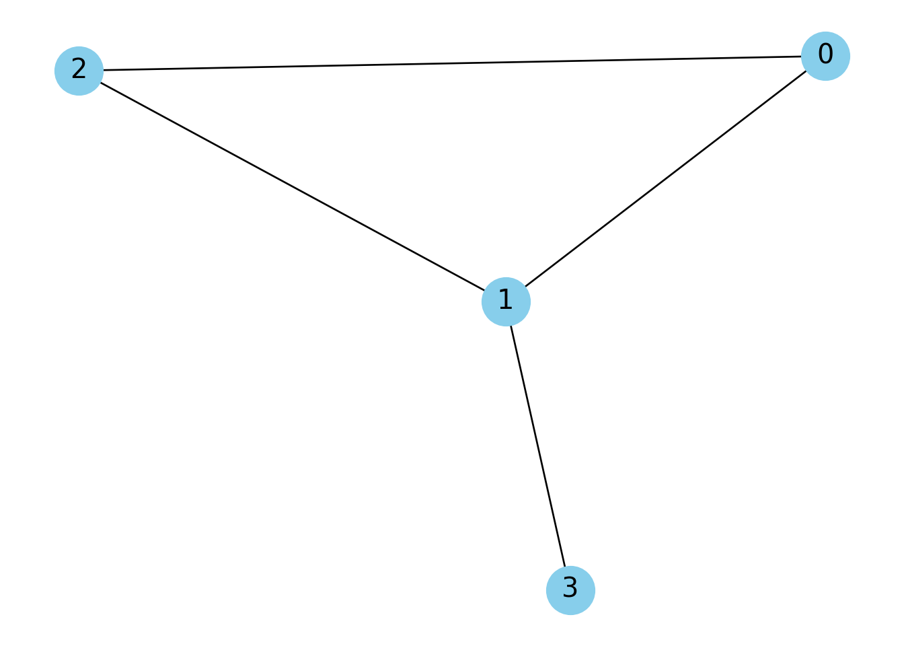
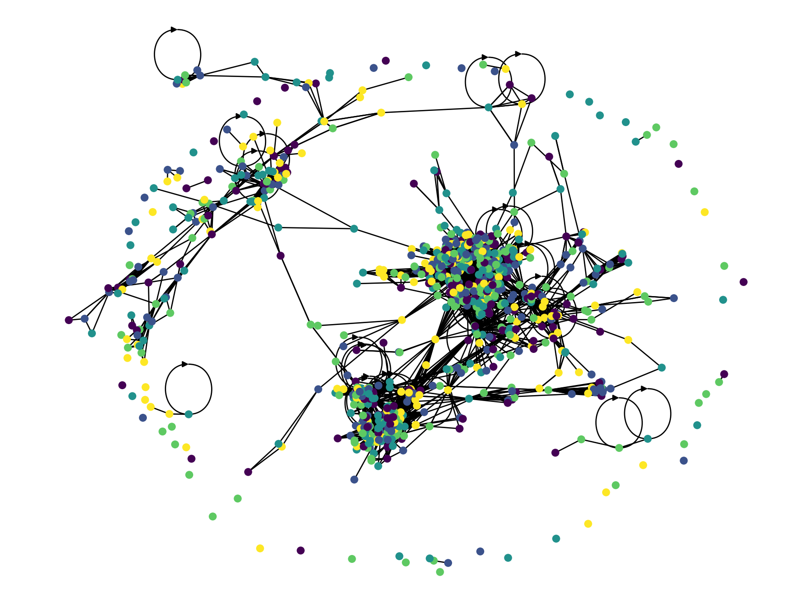
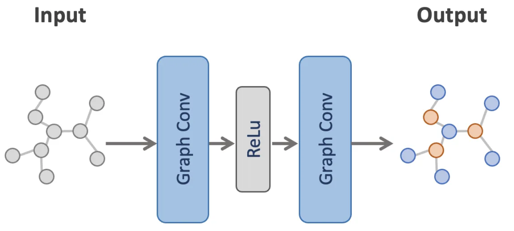
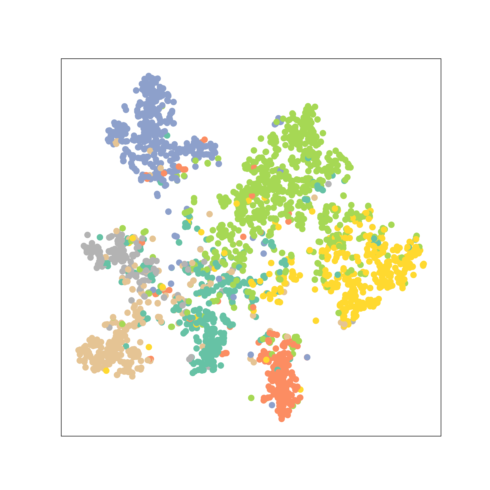

Capítulo 14 Graph Neural Network
14.1 PyTorch Geometric y Graph Neural Networks
Como hemos visto, las Graph Neural Network son una combinación de redes neuronales con datos no estructurados en forma de gráficas. Este proceso es interesante, pues en el proceso de aprendizaje los pesos incorporan la estructura subyacente de las gráficas para enriquecer las predicciones.
Como hemos comentado previamente, PyTorch Geometric (PyG) es una libreria de Python que está escrita basándose en el framework.
En PyG los objetos base para representar gráficas son de tipo
torch_geometric.data.Data, que contienen los siguientes atributos por defecto:
data.x: Matriz de características de los nodos con forma[num_nodes, num_node_features].data.edge_index: En una representación de las aristas del grafo empleando el formato Coordinate Format (COO) (https://docs.pytorch.org/docs/stable/sparse.html#sparse-coo-docs) con forma[2, num_edges]y tipotorch.long.data.edge_attr: Matriz de features numéricas de las nodos con forma[num_edges, num_edge_features].data.y: Objetivo contra el cual entrenar (puede tener una forma arbitraria); por ejemplo, objetivos a nivel de nodo con forma[num_nodes, *]o objetivos a nivel de grafo con forma[1, *].data.pos: Matriz de posición de los nodos con forma [num_nodes, num_dimensions].
Cabe destacar que estos obejtos son no obligatorios. para adaptarse a las distintas tareas de aprendizaje de GNN’s.
Para ejemplificar lo anterior veremos con se construye un GNN usando PyG. Primero definiremos la matriz de adyancencias y la convertiremos en formato COO. Vamos a visualizarla con NetworkX.
import networkx as nx
import numpy as np
import matplotlib.pyplot as plt
# Adjacency Matrix from Numpy
A = np.array([
[0, 1, 1, 0],
[1, 0, 1, 1],
[1, 1, 0, 0],
[0, 1, 0, 0]
])
# 2. Create the Graph. The nodes will be labeled 0, 1, 2, 3
G = nx.from_numpy_array(A)
# 3. Visualize the graph
pos = nx.spring_layout(G)
nx.draw(
G,
pos,
with_labels=True,
node_color='skyblue',
node_size=700,
edge_color='k',
linewidths=1,
font_size=15
)
plt.title("Graph from Adjacency Matrix (Undirected)")
plt.show()
Ahora convertimos la matriz de adyacencias a formato de coordenadas:
import torch
from torch_geometric.utils import (dense_to_sparse, to_dense_adj)
A_np = np.array([
[0, 1, 1, 0],
[1, 0, 1, 1],
[1, 1, 0, 0],
[0, 1, 0, 0]
])
# Convertimos a Tensor de PyTorch (necesario para PyG)
A = torch.from_numpy(A_np)
print("="*40)## ========================================## Adyacencias en formato COO# dense_to_sparse devuelve (edge_index, edge_attr)
edge_index, _ = dense_to_sparse(A)
print(edge_index)## tensor([[0, 0, 1, 1, 1, 2, 2, 3],
## [1, 2, 0, 2, 3, 0, 1, 1]])## ========================================## Reconstruimos la matriz densa de adyacencias## tensor([[[0., 1., 1., 0.],
## [1., 0., 1., 1.],
## [1., 1., 0., 0.],
## [0., 1., 0., 0.]]])Ahora estamos en condiciones de definir el objeto de PyG que representa a las gráfica, asignaremos numeros dummy a las features:
from torch_geometric.data import Data
x = torch.tensor(np.random.rand(4, 5), dtype=torch.float)
data = Data(x=x, edge_index=edge_index)
print("="*40)## ========================================## Features numericas de los nodos## tensor([[0.9596, 0.7039, 0.2673, 0.8562, 0.2083],
## [0.9710, 0.9893, 0.8053, 0.8788, 0.8078],
## [0.3407, 0.1069, 0.1425, 0.9853, 0.0040],
## [0.2954, 0.7467, 0.1102, 0.4946, 0.8197]])## ========================================## Informacion de adyacencias## tensor([[0, 0, 1, 1, 1, 2, 2, 3],
## [1, 2, 0, 2, 3, 0, 1, 1]])Finalmente a la hora de predecir, los modelos de Pytorch reciben los datos de las features numericas de cada nodo, así como el indice de las aristas que le corresponde
model(data.x, data.edge_index)14.2 Graph Convolutional Networks (GNN)
Para entender las GCN, primero debemos mirar hacia las CNN (Convolutional Neural Networks) tradicionales. Las CNN son herramientas imágenes, pero las imágenes son, en esencia, grafos muy ordenados como una rejilla perfecta de píxeles.

El problema surge cuando los datos son no euclidianos. Por ejemplo, en una red social un usuario puede tener 5 amigos, otro 500. No hay un orden fijo y no existe precisamente una dirección de “arriba” o “abajo” clara como en una foto.
De hecho, en una red social la estructura de conexiones es irregular y dinámica.
Esto motiva la necesidad tener modelos que extraigan características e información de los nodos (quienes son los usuarios) y de la estructura local (quiénes son sus amigos y cómo se relacionan).
14.3 ¿Cómo funcionan?
Dichas redes fueron introducidas por Thomas N. Kipf y Max Welling (ver https://openreview.net/pdf?id=SJU4ayYgl). La idea central de una convolución en grafos es el Message Passing, es decir, que la estructura de una gráfica permite que los nodos compartan la información de sus features junto con sus vecinos en la red y ponderandolo por los pesos que la red aprende en su proceso de entrenamiento.
Esto generaliza en algún sentido la acción de las redes convolucionales que procesan imagenes, pero en vez de deslizar una ventana cuadrada (filtro) sobre píxeles, los nodos “interrogan” a sus vecinos.

El proceso se resume en tres pasos clave que ocurren en cada capa: 1) Agregación: Cada nodo recolecta las características (vectores de datos) de sus vecinos inmediatos. Dado que las gráficas pueden ser etiquetadas de forma distinta, es de particular interés que las tranformaciones de agregación sean invariantes bajo permutaciones, 2) Actualización: El nodo combina esa información vecina con su propia información actual, 3) Transformación: Se aplica una función matemática (normalmente una matriz de pesos aprendible y una función de activación como ReLU) para generar una nueva representación del nodo.
Para mayor referencia, presentamos una expresion matematica de como se lleva a cabo éste proceso en tales redes:
\[\begin{equation} h_i^{(l+1)} = \sigma \left( \sum_{j \in \mathcal{N}(i) \cup \{i\}} \frac{1}{c_{ij}} h_j^{(l)} W^{(l)} \right) \end{equation}\]
- \(\mathcal{N}(i) \cup \{i\}\): Representa la vecindad del nodo \(i\) incluyendo al propio nodo (esto se conoce como añadir para no olvidar la información propia).
- \(h_j^{(l)}\): El estado del nodo vecino \(j\) en la capa anterior.
- \(W^{(l)}\): Una matriz de pesos compartida que la red aprende durante el entrenamiento.
- \(c_{ij}\): Un factor de normalización (típicamente \(\sqrt{d_i d_j}\)) que evita que los nodos con muchos vecinos tengan valores excesivamente altos, estabilizando el proceso de entrenamiento.
- \(\sigma\): Una función de activación no lineal (como \(\text{ReLU}\) o \(\text{Sigmoid}\)).
- \(h_i^{(l+1)}\): Es el nuevo vector de características () del nodo \(i\) tras la convolución.
Nota: En el capítulo previo, el ejemplo con el que se introdujo a las GNN’s, la matriz de adyacencias no se normalizó.
Alternativamente, la red se puede presentar en forma matricial:
\[\begin{equation} H^{(l+1)} = \sigma \left( \tilde{D}^{-\frac{1}{2}} \tilde{A} \tilde{D}^{-\frac{1}{2}} H^{(l)} W^{(l)} \right) \end{equation}\]
- \(H^{(l)} \in \mathbb{R}^{N \times F}\): Matriz de activaciones en la capa \(l\).
- \(\tilde{A} = A + I_N\): Matriz de adyacencia con auto-bucles (self-loops).
- \(\tilde{D}_{ii} = \sum_j \tilde{A}_{ij}\): Matriz diagonal de grados de \(\tilde{A}\).
- \(W^{(l)} \in \mathbb{R}^{F \times F'}\): Matriz de pesos entrenables para la capa \(l\).
- \(\sigma(\cdot)\): Función de activación no lineal (e.g., ReLU).
La siguiente es una representación de una GNN con capaz convolucionales:

La representación matricial nos ayuda a tener una intución de cómo red conjunta en el problema a difernetes ejes; por un lado involucra un componente estrutural al basarse directamente en los nodos y compartes informacion con su vecindad. En segund termino a través de dicha herramienta los nodos comparten información resumida de todos los nodos que están a k pasos de distancia de él.
Adicionalmente, utilizan representaciones matriciales de la teoria de gráficas clásica como la matriz de adyacencias, la diognal de grados o el Laplaciano del Grafo para operar en el dominio de las frecuencias.
14.4 Implementación en PyTorch Geometric
14.4.1 Ejemplo: Predicción del volumen de tráfico en Wikipedia (Regresión)
El siguiente ejemplo muestra como emplear las GCN para predecir el volumen de tráfico en algunos sitios Wikipedia, es decir es un problema de Regresión.
En este sentido, los datos se recopilaron de la Wikipedia en inglés (diciembre de 2018). Tales se asocian a redes de páginas sobre temas específicos (camaleones, cocodrilos y ardillas) donde los nodos representan artículos y las aristas son enlaces mutuos entre ellos.
El archivo .csv que se lee en el codigo contiene los identificadores de los nodos y el tráfico mensual promedio entre octubre de 2017 y noviembre de 2018 para cada página.
https://snap.stanford.edu/data/wikipedia-article-networks.html
import torch
import numpy as np
import matplotlib.pyplot as plt
#import seaborn as sns
import pandas as pd
from torch_geometric.datasets import WikipediaNetwork
from torch_geometric.nn import GCNConv
import torch.nn.functional as F
import torch_geometric.transforms as T
from sklearn.metrics import mean_squared_error, mean_absolute_error
# Clase para dividir los nodos en train, test y validation
chameleon_transform = T.RandomNodeSplit(num_val=300, num_test=300)Descargamos la data:
dataset = WikipediaNetwork(
root="./data/",
name="chameleon",
transform = chameleon_transform
)
data = dataset[0]Ahora visualizemos el gráfico:
import networkx as nx
from torch_geometric.utils import (
to_dense_adj, to_networkx
)
import random
class GraphUtils:
@staticmethod
def create_adjacency_matrix(data):
# Crea matriz de adyacencia
adjacency = to_dense_adj(data.edge_index)[0]
# Agrega una diagonal de unos (auto-referencia a nodos)
adjacency = adjacency + torch.eye(len(adjacency))
return adjacency
@staticmethod
def convert_to_networkx(graph, n_sample=None):
g = to_networkx(graph, node_attrs=["x"])
y = graph.y.numpy()
if n_sample is not None:
sampled_nodes = random.sample(list(g.nodes), n_sample)
g = g.subgraph(sampled_nodes)
y = y[sampled_nodes]
return g, y
@staticmethod
def plot_graph(g, y):
plt.figure(figsize=(9, 7))
nx.draw_spring(g, node_size=30, arrows=False, node_color=y)
plt.show() Algunas estadisticas
## Data(x=[2277, 2325], edge_index=[2, 36101], y=[2277], train_mask=[2277], val_mask=[2277], test_mask=[2277])print('===========================================================================================================')## ===========================================================================================================## Number of nodes: 2277## Number of edges: 36101## Average node degree: 15.85## Number of training nodes: 1677## Training node label rate: 0.74## Has isolated nodes: False## Has self-loops: True## Is undirected: FalseLa siguiente es una grafica de 1,000 nodos de Cora:
 Ahora leeremos los datos de trafico a los sitios:
Este archivo contiene el tráfico, medido en cantidas de visitas, que representan los nodos del conjunto (sitios web de Wikipedia).
## id target
## 0 0 171
## 1 1 8089
## 2 2 8568
## 3 3 47178
## 4 4 3634Vamos a concentranos en predecir el logaritmo de las visitas:
Ahora definiremos una red basada en capas de GCN para predeir el tráfico a los nodos:
class GCNRegressor(torch.nn.Module):
def __init__(self, dim_in, dim_h, dim_out):
super().__init__()
self.gcn1 = GCNConv(dim_in, dim_h * 4)
self.gcn2 = GCNConv(dim_h * 4, dim_h * 2)
self.gcn3 = GCNConv(dim_h * 2, dim_h)
self.linear = torch.nn.Linear(dim_h, dim_out)
def forward(self, x, edge_index):
h = self.gcn1(x, edge_index)
h = torch.relu(h)
h = F.dropout(h, p=0.5, training=self.training)
h = self.gcn2(h, edge_index)
h = torch.relu(h)
h = F.dropout(h, p=0.5, training=self.training)
h = self.gcn3(h, edge_index)
h = torch.relu(h)
h = self.linear(h)
return h
def fit(self, data, epochs):
optimizer = torch.optim.Adam(
self.parameters(),
lr=0.02,
weight_decay=5e-4
)
self.train()
for epoch in range(epochs + 1):
optimizer.zero_grad()
out = self(data.x, data.edge_index)
loss = F.mse_loss(
out.squeeze()[data.train_mask],
data.y[data.train_mask].float()
)
loss.backward()
optimizer.step()
if epoch % 20 == 0:
val_loss = F.mse_loss(
out.squeeze()[data.val_mask],
data.y[data.val_mask]
)
print(f"Epoch {epoch:>3} | Train Loss: {loss:.5f} | Val Loss: {val_loss:.5f}")
def test(self, data):
self.eval()
out = self(data.x, data.edge_index)
return F.mse_loss(out.squeeze()[data.test_mask], data.y[data.test_mask].float())Ahora instanciamos el modelo:
## GCNRegressor(
## (gcn1): GCNConv(2325, 512)
## (gcn2): GCNConv(512, 256)
## (gcn3): GCNConv(256, 128)
## (linear): Linear(in_features=128, out_features=1, bias=True)
## )## Epoch 0 | Train Loss: 5.63864 | Val Loss: 5.52861
## Epoch 20 | Train Loss: 5.48755 | Val Loss: 5.39600
## Epoch 40 | Train Loss: 5.06089 | Val Loss: 4.98175
## Epoch 60 | Train Loss: 4.54339 | Val Loss: 4.48048
## Epoch 80 | Train Loss: 4.03839 | Val Loss: 3.99294
## Epoch 100 | Train Loss: 3.58345 | Val Loss: 3.55557
## Epoch 120 | Train Loss: 3.19306 | Val Loss: 3.18226
## Epoch 140 | Train Loss: 2.87023 | Val Loss: 2.87563
## Epoch 160 | Train Loss: 2.61150 | Val Loss: 2.63193
## Epoch 180 | Train Loss: 2.40988 | Val Loss: 2.44402
## Epoch 200 | Train Loss: 2.25679 | Val Loss: 2.30325##
## GCN test loss: 2.49092Ahora veamos los resultados con distintas metricas en el conjunto de test:
out = gcn_regressor(data.x, data.edge_index)
y_pred = out.squeeze()[data.test_mask].detach().numpy()
mse = mean_squared_error(data.y[data.test_mask], y_pred)
mae = mean_absolute_error(data.y[data.test_mask], y_pred)
print('=' * 43)## ===========================================## GNN for Regression## Chameleon Dataset - Traffic Prediction## MSE = 2.4909 | RMSE = 1.5783 | MAE = 1.3692## ===========================================def plot_true_vs_predicted(y_true, y_pred):
# Convert to numpy if they are torch tensors
if hasattr(y_true, "detach"):
y_true = y_true.detach().cpu().numpy()
if hasattr(y_pred, "detach"):
y_pred = y_pred.detach().cpu().numpy()
# Ensure arrays are flattened (1D)
y_true = y_true.flatten()
y_pred = y_pred.flatten()
plt.figure(figsize=(8, 8))
sns.scatterplot(x=y_true, y=y_pred, alpha=0.6)
# Determine plot limits for the identity line
min_val = min(np.min(y_true), np.min(y_pred))
max_val = max(np.max(y_true), np.max(y_pred))
# Add the identity line (y = x)
plt.plot([min_val, max_val], [min_val, max_val], color='red', linestyle='--', label='Perfect Prediction')
plt.title('True Values vs. Predicted Values', fontsize=16)
plt.xlabel('True Values ($y$)', fontsize=14)
plt.ylabel('Predicted Values ($\hat{y}$)', fontsize=14)
plt.grid(True, linestyle=':', alpha=0.6)
plt.legend()
plt.show()
# Calling the function correctly
#plot_true_vs_predicted(data.y[data.test_mask], y_pred)def plot_residuals_distribution(y_true, y_pred):
# 1. Convert to numpy and flatten
if hasattr(y_true, "detach"):
y_true = y_true.detach().cpu().numpy()
if hasattr(y_pred, "detach"):
y_pred = y_pred.detach().cpu().numpy()
y_true = y_true.flatten()
y_pred = y_pred.flatten()
# 2. Calculate the residuals
residuals = y_true - y_pred
# 3. Calculate key statistics
mean_residual = np.mean(residuals)
std_residual = np.std(residuals)
# 4. Initialize the plot
plt.figure(figsize=(10, 6))
# 5. Create the histogram and KDE plot
sns.histplot(
residuals,
bins=30,
kde=True,
color='skyblue',
edgecolor='black',
line_kws={'linewidth': 3, 'color': 'darkblue', 'label': 'KDE Curve'}
)
# 6. Add a vertical line at the mean
plt.axvline(
x=mean_residual,
color='red',
linestyle='--',
linewidth=2,
label=f'Mean: {mean_residual:.4f}'
)
# 7. Add titles and labels
plt.title('Distribution of Residuals (Errors)', fontsize=16)
plt.xlabel('Residual ($y - \hat{y}$)', fontsize=14)
plt.ylabel('Frequency', fontsize=14)
# 8. Add text box for statistics
stats_text = f'Mean: {mean_residual:.4f}\nStd Dev: {std_residual:.4f}'
plt.text(
0.95, 0.95,
stats_text,
transform=plt.gca().transAxes,
verticalalignment='top',
horizontalalignment='right',
fontsize=12,
bbox=dict(boxstyle="round,pad=0.5", facecolor='white', alpha=0.8)
)
plt.legend()
plt.grid(True, linestyle=':', alpha=0.6, axis='y')
plt.show()
#plot_residuals_distribution(data.y[data.test_mask], y_pred)14.4.2 Ejemplo: Clasificación de artículos de investigación por categoría
from torch_geometric.datasets import Planetoid
from torch_geometric.transforms import NormalizeFeatures## Dataset: Cora():## ======================## Number of graphs: 1## Number of features: 1433## Number of classes: 7## Data(x=[2708, 1433], edge_index=[2, 10556], y=[2708], train_mask=[2708], val_mask=[2708], test_mask=[2708])print('===========================================================================================================')## ===========================================================================================================## Number of nodes: 2708## Number of edges: 10556## Average node degree: 3.90## Number of training nodes: 140## Training node label rate: 0.05## Has isolated nodes: False## Has self-loops: False## Is undirected: TrueLa arquitectura de la red es representada en la siguiente imagen:

Esta es su implementación:
import torch
import torch.nn.functional as F
from torch_geometric.nn import GCNConv
class GCNClassifier(torch.nn.Module):
def __init__(self, dim_in, dim_h, dim_out):
super().__init__()
torch.manual_seed(1234567)
self.gcn1 = GCNConv(dim_in, dim_h)
self.gcn2 = GCNConv(dim_h, dim_out)
def forward(self, x, edge_index):
h = self.gcn1(x, edge_index)
h = torch.relu(h)
h = F.dropout(h, p=0.5, training=self.training)
h = self.gcn2(h, edge_index)
return h
def fit(self, data, epochs, lr=0.01, weight_decay=5e-4):
optimizer = torch.optim.Adam(
self.parameters(),
lr=lr,
weight_decay=weight_decay
)
criterion = torch.nn.CrossEntropyLoss()
self.train()
for epoch in range(epochs + 1):
optimizer.zero_grad()
out = self(data.x, data.edge_index)
loss = criterion(
out[data.train_mask],
data.y[data.train_mask]
)
loss.backward()
optimizer.step()
if epoch % 10 == 0:
val_acc = self.validate(data)
print(
f"Epoch {epoch:>3} | "
f"Train Loss: {loss:.4f} | "
f"Val Acc: {val_acc:.4f}"
)
@torch.no_grad()
def validate(self, data):
self.eval()
out = self(data.x, data.edge_index)
pred = out.argmax(dim=1)
correct = pred[data.val_mask] == data.y[data.val_mask]
return correct.sum().item() / int(data.val_mask.sum())
@torch.no_grad()
def test(self, data):
self.eval()
out = self(data.x, data.edge_index)
pred = out.argmax(dim=1)
correct = pred[data.test_mask] == data.y[data.test_mask]
return correct.sum().item() / int(data.test_mask.sum())model = GCNClassifier(
dim_in=dataset.num_features,
dim_h=16,
dim_out=dataset.num_classes
)
model.fit(data, epochs=200)## Epoch 0 | Train Loss: 1.9463 | Val Acc: 0.2880
## Epoch 10 | Train Loss: 1.8478 | Val Acc: 0.3540
## Epoch 20 | Train Loss: 1.6847 | Val Acc: 0.5300
## Epoch 30 | Train Loss: 1.4675 | Val Acc: 0.6780
## Epoch 40 | Train Loss: 1.2173 | Val Acc: 0.7500
## Epoch 50 | Train Loss: 0.9753 | Val Acc: 0.7540
## Epoch 60 | Train Loss: 0.7775 | Val Acc: 0.7660
## Epoch 70 | Train Loss: 0.6319 | Val Acc: 0.7740
## Epoch 80 | Train Loss: 0.5292 | Val Acc: 0.7760
## Epoch 90 | Train Loss: 0.4561 | Val Acc: 0.7860
## Epoch 100 | Train Loss: 0.4025 | Val Acc: 0.7880
## Epoch 110 | Train Loss: 0.3620 | Val Acc: 0.7880
## Epoch 120 | Train Loss: 0.3303 | Val Acc: 0.7880
## Epoch 130 | Train Loss: 0.3048 | Val Acc: 0.7960
## Epoch 140 | Train Loss: 0.2839 | Val Acc: 0.7960
## Epoch 150 | Train Loss: 0.2665 | Val Acc: 0.7980
## Epoch 160 | Train Loss: 0.2517 | Val Acc: 0.7980
## Epoch 170 | Train Loss: 0.2391 | Val Acc: 0.7960
## Epoch 180 | Train Loss: 0.2281 | Val Acc: 0.7940
## Epoch 190 | Train Loss: 0.2185 | Val Acc: 0.7920
## Epoch 200 | Train Loss: 0.2100 | Val Acc: 0.7920## Test Accuracy: 0.8120import matplotlib.pyplot as plt
from sklearn.manifold import TSNE
def visualize(h, color):
z = TSNE(n_components=2).fit_transform(h.detach().cpu().numpy())
plt.figure(figsize=(10,10))
plt.xticks([])
plt.yticks([])
plt.scatter(z[:, 0], z[:, 1], s=70, c=color, cmap="Set2")
plt.show()
14.5 Graph Attention Network (GAT)
En las convoluciones tradicionales (GCN), la información de los vecinos se agrega de forma estática. Normalmente, se usa un promedio o un factor basado únicamente en el grado (cuántos amigos tienes), pero no en quiénes son esos amigos o qué tan relevantes son para una tarea específica.
La limitación: No todos los vecinos son igual de importantes.
Por ejemplo, en una red de citaciones de articulos académicdos sobre Deep Learning, un artículo sobre “Deep Learning” puede citar 50 artículos, pero solo 3 son sus bases teóricas fundamentales. Desortunadamente una red GCN trataría a los 50 por igual.
Las GAT introducen el mecanismo de atención, permitiendo que cada nodo decida dinámicamente qué vecinos “escuchar” más y cuáles ignorar.
14.5.1 ¿Cómo funcionan?
En líneas generales, la atención describe un promedio ponderado de múltiples elementos, cuyos pesos se calculan dinámicamente a partir de una consulta de entrada y las claves de los elementos.
Así como en otros entornos de Deeo Learning, este concepto se puede aplicar de forma similar a los grafos; uno de ellos es la Red de Atención de Grafos (GAT, propuesta por el equipo de Petar Veličković en 2017 (https://arxiv.org/abs/1710.10903).
De forma similar a la GCN, la capa de atención de grafos crea un mensaje para cada nodo mediante una matriz lineal de capas y pesos. Para la atención, utiliza el mensaje del propio nodo como consulta y los mensajes a promediar como claves y valores (tenga en cuenta que esto también incluye el mensaje a sí mismo).
La función de puntuación se implementa como una MLP de una capa que asigna la consulta y la clave a un único valor
Entrando a mayor detalle, la idea clave es que el factor de normalización \(c_ij\) (que en las GCN era fijo) se convierta en un coeficiente de atención aprendible \(\alpha_ij\)
De este modo, el mecanismo de atención se obtiene a partir de un proceso para calcular la nueva representación de un nodo i se divide en tres pasos:
Transformación Lineal: Se aplica una matriz de pesos W a todas las características de los nodos para proyectarlos a una dimensión superior.
Cómputo de Coeficientes (\(e_{ij}\): Se calcula una “puntuación” de importancia entre el nodo i y su vecino j usando un mecanismo de atención (usualmente una pequeña red neuronal de una sola capa).
\[\begin{equation} e_{ij} = a\left( \mathbf{W} \vec{h}_i, \mathbf{W} \vec{h}_j \right) \end{equation}\]
- Normalización (Softmax) Se aplica la función Softmax sobre todos los vecinos para que la suma de las importancias sea igual a 1.
\[\begin{equation} \alpha_{ij} = \text{softmax}_j(e_{ij}) = \frac{\exp(e_{ij})}{\sum_{k \in \mathcal{N}(i)} \exp(e_{ik})} \end{equation}\]
Multi-Head Attention (Atención de múltiples cabezales)
Para estabilizar el aprendizaje, las GAT no usan solo un mecanismo de atención, sino varios en paralelo (como en los Transformers). Cada “cabezal” puede aprender a enfocarse en diferentes tipos de relaciones.
\[\begin{equation} \vec{h}_i^{(l+1)} = \sigma \left( \sum_{j \in \mathcal{N}(i)} \alpha_{ij} \mathbf{W} \vec{h}_j^{(l)} \right) \end{equation}\]

\[\begin{equation} \alpha_{ij} = \frac{\exp\left(\text{LeakyReLU}\left(\mathbf{a}\left[\mathbf{W}h_i||\mathbf{W}h_j\right]\right)\right)}{\sum_{k\in\mathcal{N}_i} \exp\left(\text{LeakyReLU}\left(\mathbf{a}\left[\mathbf{W}h_i||\mathbf{W}h_k\right]\right)\right)} \end{equation}\]
Enn resumen, los componentes de las GAT pueden esquematizarse como:
- \(e_{ij}\): Es el coeficiente de atención (o puntuación) que indica la importancia de las características del nodo \(j\) para el nodo \(i\).
- \(a(\cdot)\): Es un mecanismo de atención, generalmente implementado como una red neuronal de una sola capa () que transforma la concatenación de los vectores de los nodos en un escalar.
- \(\mathbf{W}\): Una matriz de pesos compartida que realiza una transformación lineal sobre las características de entrada de todos los nodos.
- \(\alpha_{ij}\): Son los coeficientes de atención normalizados mediante la función , asegurando que la suma de las influencias de los vecinos de \(i\) sea igual a 1.
- \(\mathcal{N}(i)\): El conjunto de vecinos de primer orden del nodo \(i\).
- \(\vec{h}_i^{(l+1)}\): El nuevo vector de características generado para el nodo \(i\), resultado de la suma ponderada de las características transformadas de su vecindad.
- \(\exp(\cdot)\): La función exponencial, utilizada para calcular el peso relativo de cada conexión antes de la normalización.
14.6 Implementación en PyTorch Geometric
14.6.1 Ejemplo: Clasificación de artículos de investigación por categoría (Parte II)
Volveremos a trabajar con el conjunto de datos Cora, para predecir la categorìa a la que pertnecen sus artìculos de investigacion. Como cambio, usaremos redes GAT para revisar el cambio de performace en la predicción:
import torch
import torch.nn.functional as F
from torch_geometric.nn import GATConv
class GATClassifier(torch.nn.Module):
def __init__(self, dim_in, dim_h, dim_out, heads):
super().__init__()
torch.manual_seed(1234567)
self.gat1 = GATConv(
in_channels=dim_in,
out_channels=dim_h,
heads=heads,
dropout=0.6
)
self.gat2 = GATConv(
in_channels=dim_h * heads,
out_channels=dim_out,
heads=1,
concat=False,
dropout=0.6
)
def forward(self, x, edge_index):
h = F.dropout(x, p=0.6, training=self.training)
h = self.gat1(h, edge_index)
h = F.elu(h)
h = F.dropout(h, p=0.6, training=self.training)
h = self.gat2(h, edge_index)
return h
def fit(self, data, epochs, lr=0.005, weight_decay=5e-4):
optimizer = torch.optim.Adam(
self.parameters(),
lr=lr,
weight_decay=weight_decay
)
criterion = torch.nn.CrossEntropyLoss()
self.train()
for epoch in range(epochs + 1):
optimizer.zero_grad()
out = self(data.x, data.edge_index)
loss = criterion(
out[data.train_mask],
data.y[data.train_mask]
)
loss.backward()
optimizer.step()
if epoch % 10 == 0:
val_acc = self.validate(data)
test_acc = self.test(data)
print(
f"Epoch {epoch:>3} | "
f"Train Loss: {loss:.4f} | "
f"Val Acc: {val_acc:.4f} | "
f"Test Acc: {test_acc:.4f}"
)
@torch.no_grad()
def validate(self, data):
self.eval()
out = self(data.x, data.edge_index)
pred = out.argmax(dim=1)
correct = pred[data.val_mask] == data.y[data.val_mask]
return correct.sum().item() / int(data.val_mask.sum())
@torch.no_grad()
def test(self, data):
self.eval()
out = self(data.x, data.edge_index)
pred = out.argmax(dim=1)
correct = pred[data.test_mask] == data.y[data.test_mask]
return correct.sum().item() / int(data.test_mask.sum())Ahora instanciamos el modelo:
model = GATClassifier(
dim_in=dataset.num_features,
dim_h=6,
dim_out=dataset.num_classes,
heads=3
)
print(model)## GATClassifier(
## (gat1): GATConv(1433, 6, heads=3)
## (gat2): GATConv(18, 7, heads=1)
## )Ahora entrenamos el modelo con capaz GAT:
## Epoch 0 | Train Loss: 1.9454 | Val Acc: 0.1720 | Test Acc: 0.1640
## Epoch 10 | Train Loss: 1.8858 | Val Acc: 0.7700 | Test Acc: 0.8060
## Epoch 20 | Train Loss: 1.7986 | Val Acc: 0.7960 | Test Acc: 0.8140
## Epoch 30 | Train Loss: 1.6868 | Val Acc: 0.7980 | Test Acc: 0.8070
## Epoch 40 | Train Loss: 1.5508 | Val Acc: 0.8000 | Test Acc: 0.8060
## Epoch 50 | Train Loss: 1.3944 | Val Acc: 0.8000 | Test Acc: 0.8080Ahora evaluamos al modelo:
## Final Test Accuracy: 0.8080